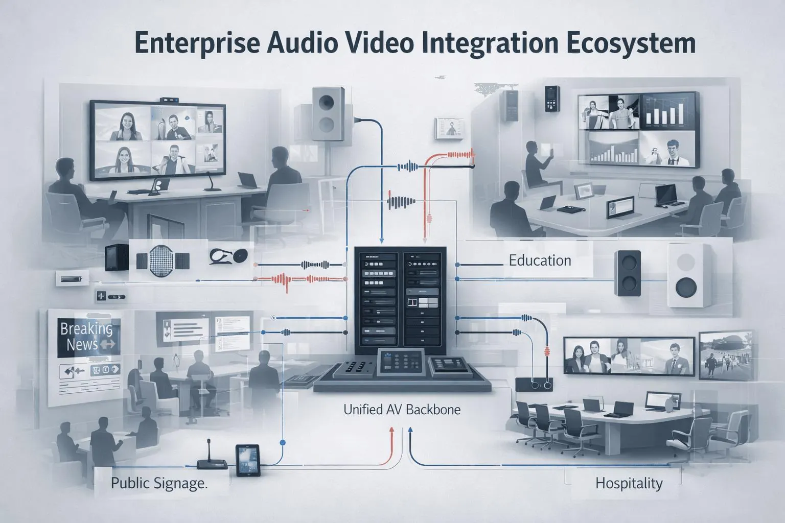
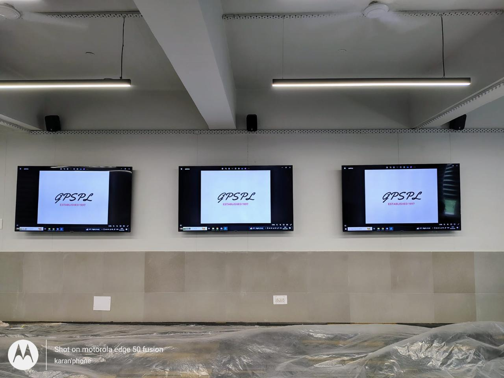
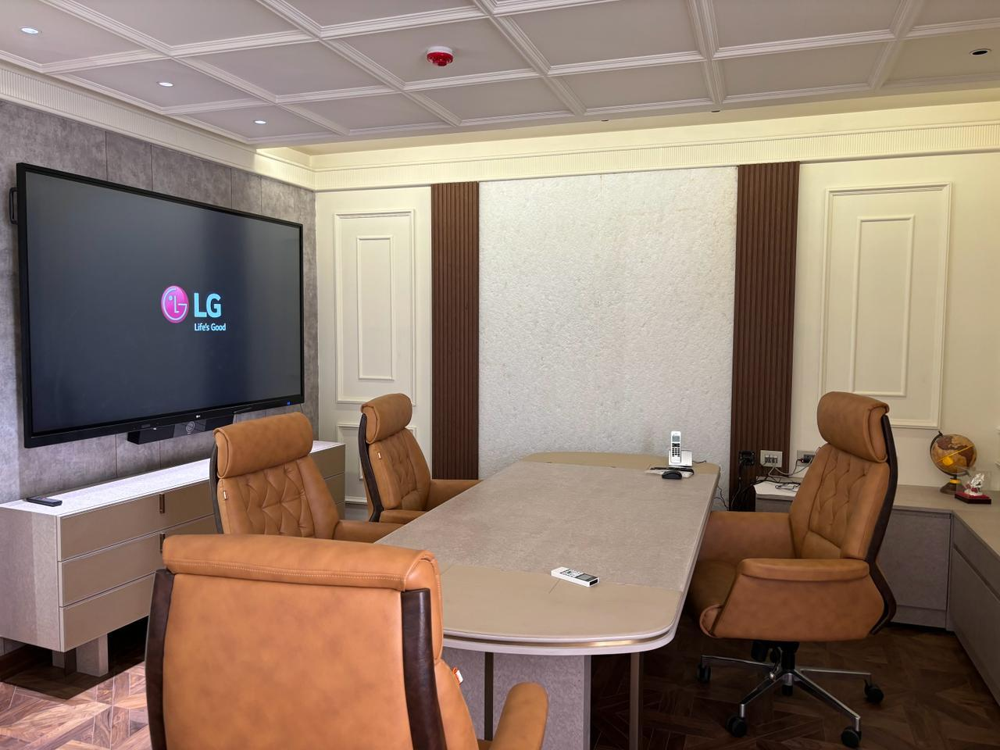
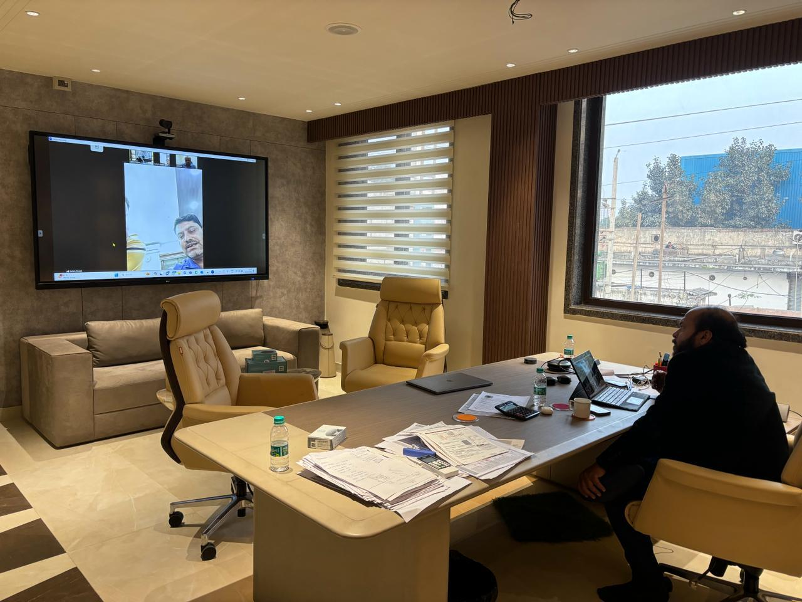

Consult
We understand the room purpose, users, content sources, meeting workflows, site constraints, infrastructure and support expectations.
AV System Integrator in Delhi NCR & India
GPSPL designs, supplies, integrates, commissions and supports professional AV systems for conference rooms, boardrooms, classrooms, auditoriums, command centers, LED walls, signage zones and enterprise campuses.
We understand the room purpose, users, content sources, meeting workflows, site constraints, infrastructure and support expectations.
We align product procurement with brand portfolio, warranty expectations, compatibility, budget and long-term serviceability.
We connect displays, speakers, microphones, DSPs, control systems, sources, conferencing platforms, cabling, racks and IT infrastructure into one working AV system.
We test, commission, train users, document the setup and offer AMC or post-installation support planning based on project scope and site requirements.
GPSPL Expertise
Good AV integration is not only buying a display, camera or speaker. A reliable system needs the right product selection, signal flow, microphone pickup, speaker coverage, display visibility, control logic, cabling, rack planning, network readiness, power backup, commissioning and user handover. GPSPL combines technology distribution with system integration so buyers can work with one team from product selection to installation and support.

Buying & Planning Guidance
Useful planning points for organizations comparing audio visual integration for enterprise rooms and facilities, technology supply, integration, installation and long-term support options.
GPSPL first understands the room, users, workflow, site condition and support expectation. Then we suggest the product stack, installation plan and handover process.
Service Portfolio
Integrated systems designed around user experience, reliability, and long-term performance.
Commercial displays, interactive panels, projectors, screens, active LED walls and video walls selected around viewing distance, brightness, content type and mounting condition.
PTZ cameras, video bars, room PCs, codecs, BYOD workflows, Teams or Zoom rooms, camera presets and source workflows for hybrid meetings.
Ceiling, table, wireless and boundary microphones planned around seating layout, ceiling height, room acoustics, audience participation and DSP channel requirement.
Room audio designed for speech clarity, even coverage, clean gain structure, echo control, amplification headroom and commissioning-friendly tuning.
Touch panels, controllers, source switching, presets, room scheduler workflows and simple operating logic for meeting start, display source and audio control.
Rack layout, cable dressing, signal routing, network coordination, UPS sizing, power conditioning and service documentation for cleaner long-term ownership.
Application Environments
AV environments for boardrooms, campuses, command centers, healthcare, public institutions, and experience spaces.
Technology Partners
Products and technologies selected around project fit, installation quality, support and performance.
Professional audio, installed systems, control and enterprise AV technologies for integrated environments.
Installed sound, loudspeaker systems and venue audio solutions for speech and performance clarity.

Control, switching and monitoring technology for boardrooms, classrooms and enterprise AV spaces.

Professional display and visual communication systems for enterprise spaces.
Professional display, imaging and camera technologies for meeting and presentation environments.

Meeting-room collaboration endpoints, cameras, audio devices and hybrid-work technology.

PTZ cameras, lecture capture and visual communication products for rooms and learning spaces.

Professional microphone and audio technologies for conferencing, education and presentation spaces.

Control and automation systems for professional meeting-room and enterprise environments.

KVM, AV switching, extension and connectivity infrastructure for integrated rooms and command spaces.
Interactive display and presentation technologies for meeting and learning environments.

Projection and visual display technologies for training rooms, auditoriums and classrooms.
Project Execution
A practical delivery flow from consultation to handover and support.
Why GPSPL
A system integration partner focused on product fit, installation quality and after-sales support.
We avoid unnecessary premium hardware when a cost-efficient product fully meets the technical requirement.
Display, pickup, coverage, rack, UPS and control requirements are checked before the BOQ is finalized.
Rack dressing, cable labels, user training and handover notes make the system easier to operate and maintain.
Product supply, installation, commissioning and AMC stay connected through one accountable GPSPL workflow.
Solutions are planned around room purpose, user workflow, product compatibility and future serviceability.
AV, audio, video, control, IT readiness and power backup are coordinated as one working environment.
Field Experience
GPSPL project visuals selected from real rooms, display environments, training spaces and integrated AV deployments.

Boardroom AV with display, conferencing audio, wireless presentation, source switching and control workflow.

Training-room AV with display visibility, instructor presentation workflow, room audio readiness and support planning.

Multi-display wall planning for room visibility, content routing, installation readiness and serviceable AV ownership.
Case Studies
Structured delivery notes that show how GPSPL studies the requirement, designs the solution, implements the system, and supports the outcome.
The client needed easier meeting start, better audio pickup and a supportable hybrid collaboration workflow.
GPSPL planned display, camera, microphone, DSP, source selection, control and cabling as one room system.
Products were supplied, installed, configured, tested and handed over with user guidance.
The room became easier for users and clearer for IT and facility teams to support.
Different rooms had inconsistent products, workflows and service expectations.
GPSPL mapped room categories and created repeatable AV standards for supply, installation and support.
Room requirements, cable routing, rack needs and handover process were documented before deployment.
The organization gained easier procurement, predictable user experience and better lifecycle support.
The client needed a clear, reliable audio visual integration for enterprise rooms and facilities approach for auditoriums.
GPSPL reviewed the room use, product fit, cabling, power, installation scope and service expectations before recommending the stack.
The solution was planned for supply, installation, configuration, testing, documentation and handover with clear ownership.
The site received a practical technology plan with easier procurement, cleaner deployment and long-term support readiness.
The client needed a clear, reliable audio visual integration for enterprise rooms and facilities approach for universities.
GPSPL reviewed the room use, product fit, cabling, power, installation scope and service expectations before recommending the stack.
The solution was planned for supply, installation, configuration, testing, documentation and handover with clear ownership.
The site received a practical technology plan with easier procurement, cleaner deployment and long-term support readiness.
Deployment Visuals
Professional AV environments across boardrooms, meeting rooms, training rooms, installation, display systems and video conferencing.



Resources
Brochures, datasheets, product guides, and solution catalogs for project planning.
Comparison Guide
Understand the difference between simple product sourcing and hiring an integrated, accountable AV partner.
| Parameter | Product Supply Only | Turnkey AV Integration (GPSPL) |
|---|---|---|
| Scope of Work | Box delivery of displays, speakers or extenders without cabling, programming or mounting. | Complete planning, site survey, rack dressing, DSP audio tuning, control programming, and user training. |
| Accountability | Client's IT/facility team coordinates multiple vendor trades, mounts, and wiring. | Single point of contact handles entire design, sourcing, physical mounting, and calibration. |
| Warranty Coordination | Client must unmount faulty hardware, ship to OEM service center, and track repair status. | GPSPL handles diagnostics, unmounting, OEM coordination, logistics, repair tracking, and remounting. |
| System Tuning & QA | No system calibration. Audio echo, signal latency, and controller matching are client's risk. | Professional acoustic calibration, microphone voice tracking setup, and video matrix switching verification. |
FAQ
Answers to common questions about design, implementation, brands, support, and Pan-India project execution.
An AV system integrator studies the room, user workflow, display requirement, audio requirement, camera framing, cabling, rack, control, network, power and support needs, then supplies, installs, configures, tests and hands over the complete system.
Yes. GPSPL supports product procurement, system design, installation, commissioning, user training, warranty coordination, AMC and after-sales support.
Yes. GPSPL can plan displays, cameras, microphones, speakers, DSP, control processors, room schedulers, cabling, rack, UPS and installation scope for huddle rooms, meeting rooms, conference rooms and boardrooms.
Yes. GPSPL can prepare a planning BOQ from room size, seating, workflow and selected preferences. The final BOQ and pricing are validated after site survey, equipment selection, mounting condition and cable route review.
Yes. AMC, preventive maintenance, technical support, warranty coordination and service planning can be included depending on project scope and client requirement.
GPSPL is based in New Delhi and supports AV, display, audio, collaboration, automation, IT infrastructure and AMC requirements across Delhi NCR and India depending on project scope.
Project timelines depend on room type, site readiness, product availability, installation complexity and commissioning scope. GPSPL defines the timeline after consultation and site assessment.
Yes. GPSPL can assess existing displays, audio, network, rack, power and cabling, then recommend what can be reused, upgraded or replaced for reliable performance.
Talk to GPSPL
Share room type, room size, seating, site photos, preferred workflow, preferred brands and support expectations. GPSPL will help prepare the design direction, BOQ, installation scope and formal quotation after validation.